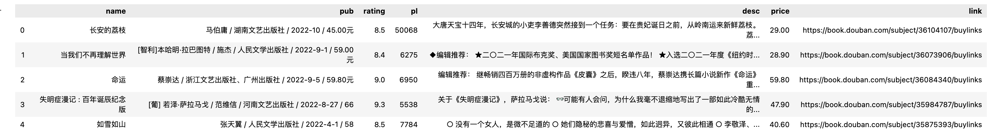
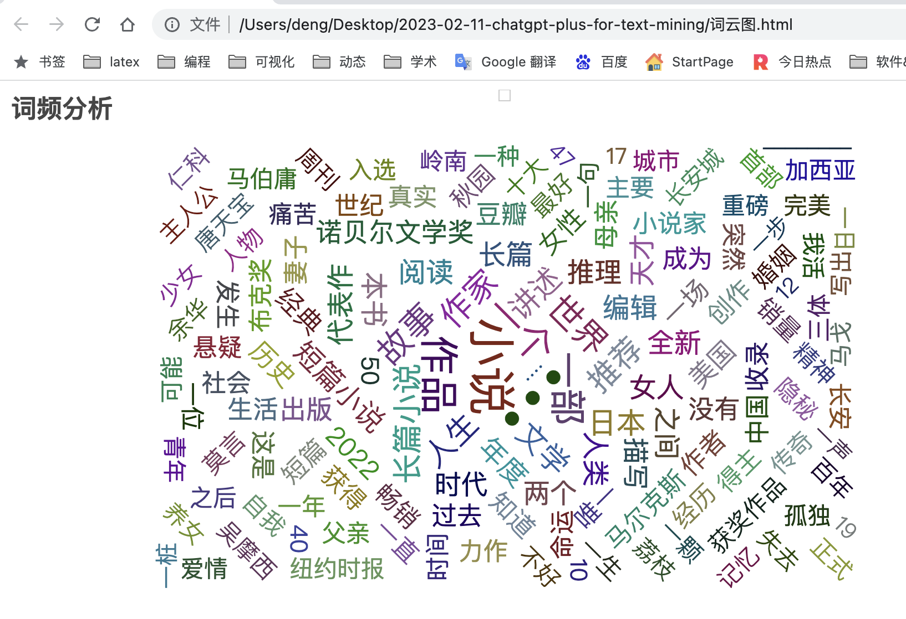
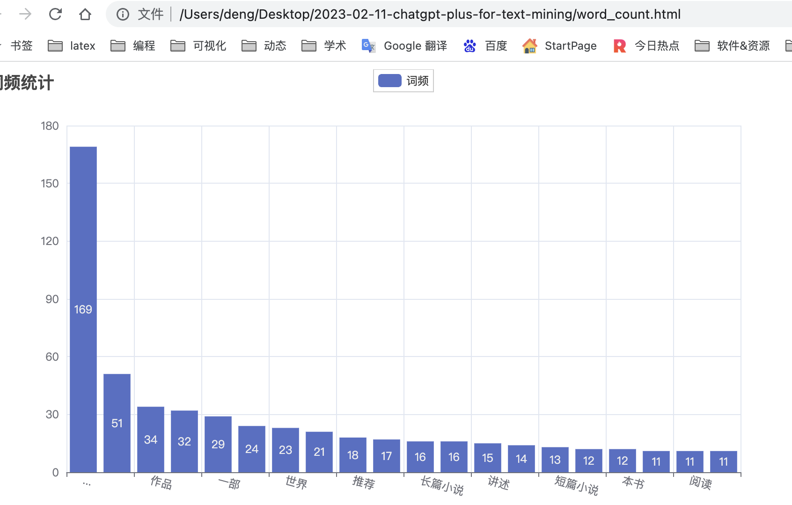

任务描述
请用Python撰写一个中文文本分析的代码，进行词频统计、绘制词云图。
分析的数据是csv文件，过程使用pandas、pyecharts、jieba等库。
代码生成后，按照数据导入、数据清洗、数据分析、结果展示四个章节部分对代码进行中文讲解，格式为markdown。
需要注意
- chatGPT需要科学上网才能使用， 推荐 科学上网工具v2net。
- 如果想升级为chatGPT Plus，需要使用国外的虚拟信用卡，推荐阅读[使用虚拟信用卡，国内用户升级为chatGPT plus会员]https://hidadeng.github.io/blog/2023-02-11-credit_card_for_chatgpt-plus)
说明
- 以下内容，80%左右内容为chatGPT生成，大邓工作主要是准备实验数据，调试代码，编辑章节。
- 实验环境chatGPT PLUS，今天刚刚花了20美元，使用全局网络模式下，chatGPT响应更稳定快速。
- chatGPT PLUS虽然很强，结果依然有问题，最初生成的词云图是基于wordcloud库，
该库不支持中文，绘制的图片是乱码的。这里指导ta改为pyecharts制作词云图。
如需了解升级 chatGPT plus 教程(国内信用卡不支持，绑定需要国外的信用卡)， 可以私信大邓 372335839， 备注【姓名-学校-专业】
下载本文
一、数据导入
首先需要导入需要的库：pandas、jieba、pyecharts等。如果电脑没有相应的库，可以命令行中执行以下安装命令
pip3 install pyecharts
pip3 install jieba
读取csv文件，使用pandas库的read_csv函数：
import pandas as pd
import jieba
import matplotlib.pyplot as plt
from pyecharts import options as opts
from pyecharts.charts import Bar, WordCloud
df = pd.read_csv('data.csv', encoding='utf-8')
df.head()
Run

二、数据清洗
清洗数据是文本分析的第一步，这里需要对数据进行去重、去除空值、去除停用词等操作。
# 去重
df = df.drop_duplicates()
# 去除空值
df = df.dropna()
# 加载停用词表
stopwords = []
with open('stopwords.txt', 'r', encoding='utf-8') as f:
for line in f:
stopwords.append(line.strip())
# 分词，并去除停用词
text = ''
for content in df['desc']:
seg_list = jieba.cut(content)
for word in seg_list:
if word not in stopwords:
text += word + ' '
#查看text部分内容
text[:200]
Building prefix dict from the default dictionary ...
Dumping model to file cache /var/folders/y0/4gqxky0s2t94x1c1qhlwr6100000gn/T/jieba.cache
Loading model cost 0.460 seconds.
Prefix dict has been built successfully.
Run
'唐天宝 十四年 长安城 小吏 李善德 突然 接到 一个 任务 贵妃 诞日 之前 岭南 运来 新鲜 荔枝 荔枝 “ 一日 色变 两日 香变 三日 味变 ” 岭南 长安 五千余里 山水 迢 ... ◆ 编辑 推荐 ★ 〇 一年 国际 布克奖 美国 国家图书奖 短 名单 作品 ★ 入选 〇 二一 年度 纽约时报 书评 周刊 十大 好书 ★ 入选 奥巴马 〇 一年 夏季 阅读 书单 ★ .'
三、数据分析
使用jieba库对文本进行分词处理，然后统计每个词语的出现频率。这里使用Python的字典数据结构进行计数。
# 分词
seg_list = jieba.cut(text)
# 统计词频
word_count = {}
for word in seg_list:
if len(word) >= 2: # 只统计长度大于等于2的词语
if word not in word_count:
word_count[word] = 1
else:
word_count[word] += 1
word_count
Run
{'唐天宝': 4,
'十四年': 2,
'长安城': 4,
'小吏': 2,
'李善德': 2,
'突然': 5,
'接到': 2,
......
'文笔': 1,
'行云流水': 1,
'医学': 1,
'研究生': 1,
'大为': 1,
'空怀': 1,
'壮志': 1,
'无职无权': 1,
'时来运转': 1,
'有名': 2,
'有利': 1,
'真切': 1,
'旅程': 1,
'困扰': 1,
'傅真': 1,
'暌违': 1,
'七年': 1,
...}
四、结果展现
接下来，根据统计结果绘制词云图和柱状图。
4.1 词云图
绘制词云图，使用pyecharts的WordCloud库： 
import pyecharts.options as opts
from pyecharts.charts import WordCloud
wordfreqs = [(w, str(f)) for w,f in word_count.items()]
(
WordCloud()
.add(series_name="", data_pair=wordfreqs, word_size_range=[20, 100])
.set_global_opts(
title_opts=opts.TitleOpts(title="词频分析", title_textstyle_opts=opts.TextStyleOpts(font_size=23)
),
tooltip_opts=opts.TooltipOpts(is_show=True),
)
.render("词云图.html") #存储位置
)
4.2 柱状图
绘制柱状图

#
top_n = 20
word_count_sorted = sorted(word_count.items(), key=lambda x: x[1], reverse=True)
word_top_n = word_count_sorted[:top_n]
bar = Bar()
bar.add_xaxis([w[0] for w in word_top_n])
bar.add_yaxis("词频", [w[1] for w in word_top_n])
bar.set_global_opts(title_opts=opts.TitleOpts(title="词频统计"), xaxis_opts=opts.AxisOpts(axislabel_opts=opts.LabelOpts(rotate=-15)))
bar.render("word_count.html")